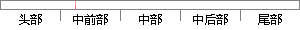

它还包括一个完整的MMU来处理虚拟内存管理。
片段位置图

相似结果
相似片段：S3C44BOX为处理器的目标系统上完整的实现过程,包括...(MemoryManagementUnit,MMU)的微控制器的一个派生...在基于分页机制的虚拟内存管理模式中,逻辑地址向物理...
| 标题 | 《嵌入式Linux操作系统的研究与开发》 |
| 对比库 | 中国学位论文全文数据库 |
| 作者 | 雷旭 |
| 机构 | 长安大学 |
| 分类 | 交通信息工程及控制 |
| 年份 | 2005 |
| 相似率 | 73.68% （轻度抄袭） |
※ 片段修改建议 ※
近似词参考：- 包括：包罗 包孕 包含 囊括
- 处理：处置 处置惩罚
- 完整：完全 完备
- 管理：办理 经管 治理
系统自动生成语句：它还包罗一个完全的MMU来处置虚拟内存办理。
注：本片段修改建议为系统自动生成，仅供参考。